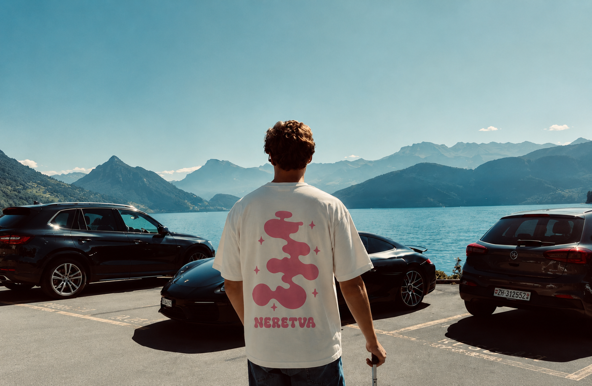
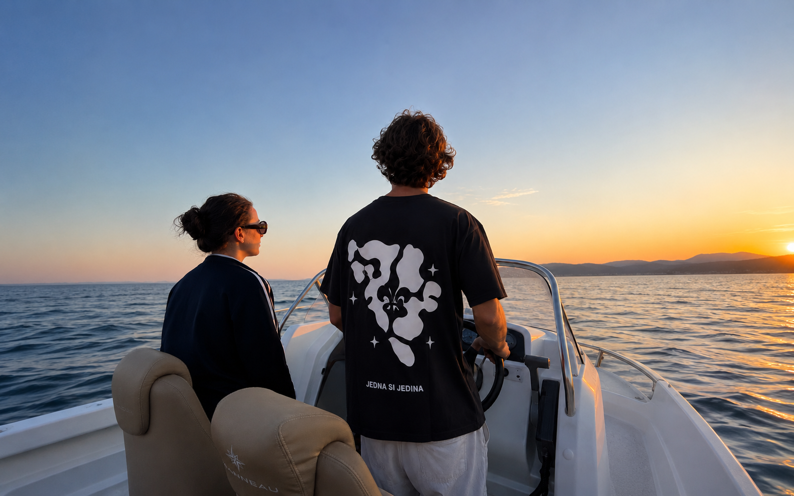
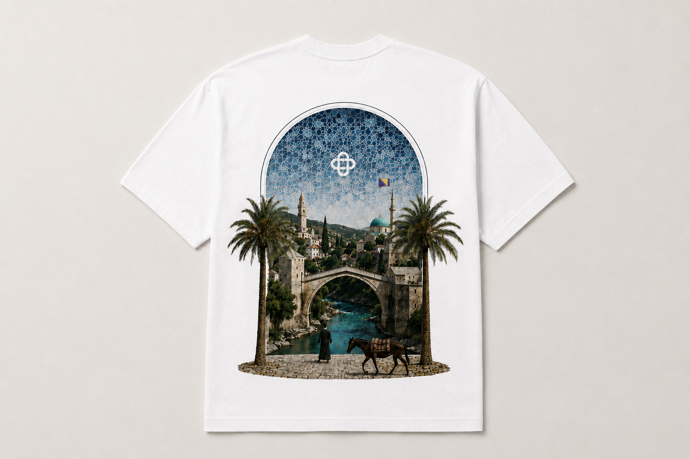
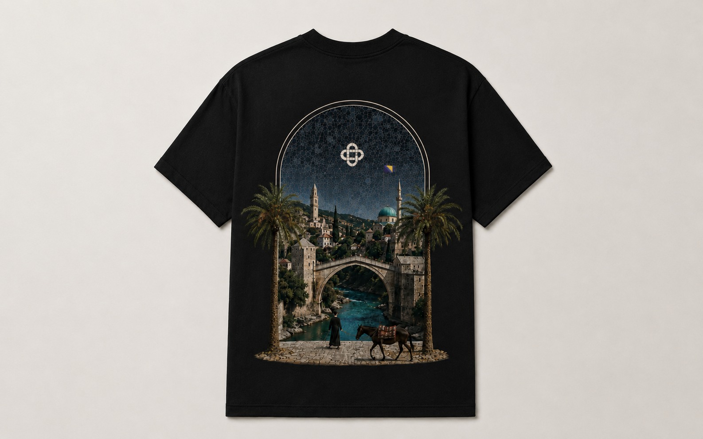
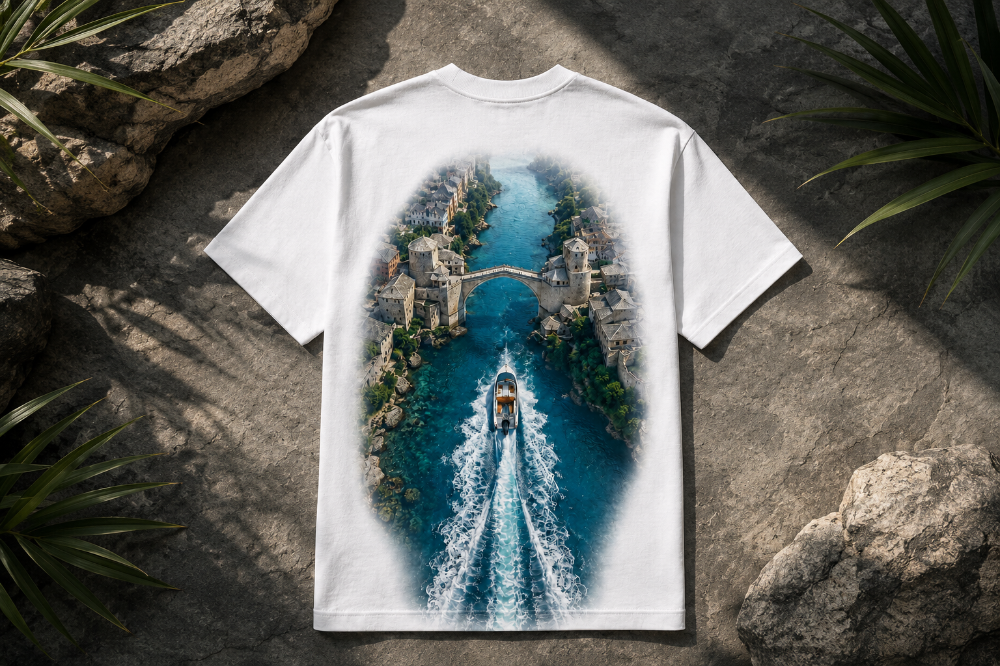
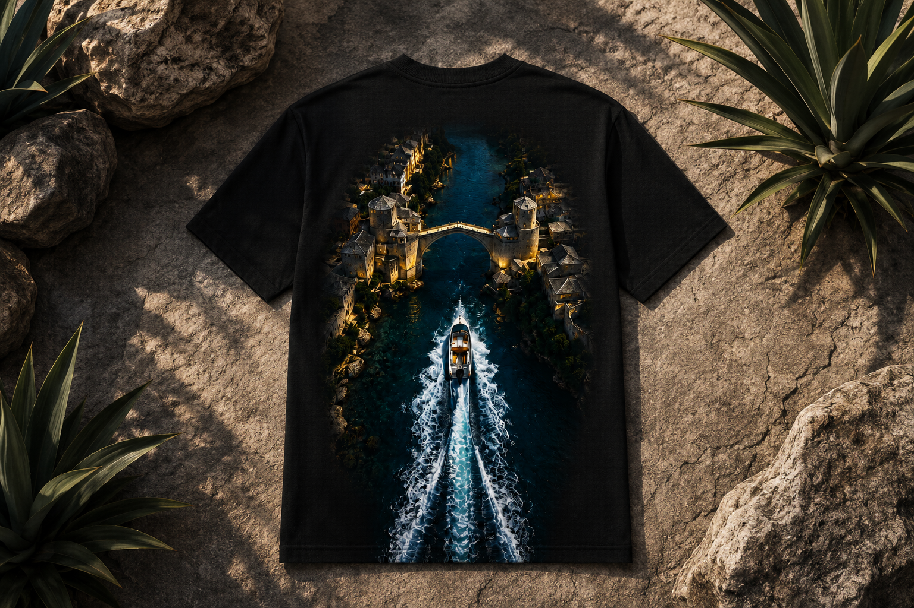
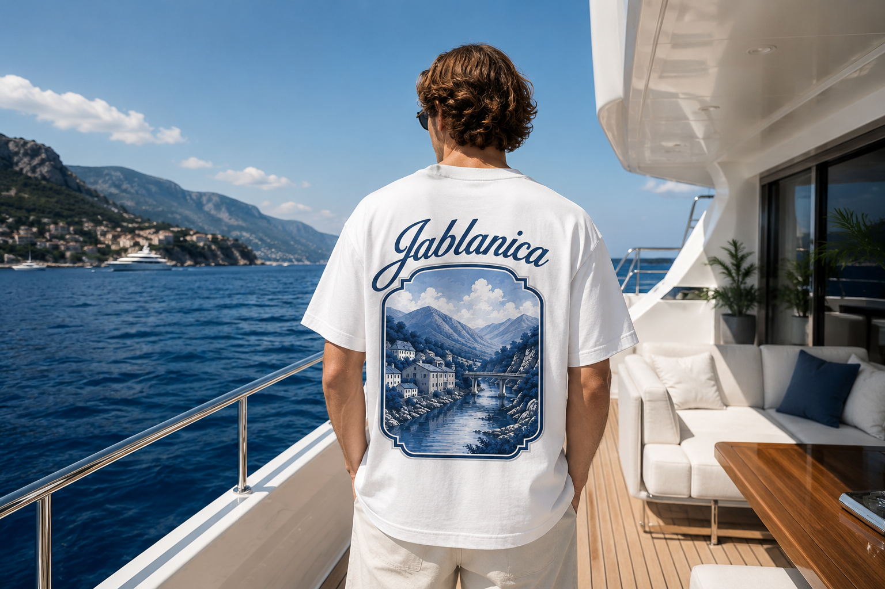
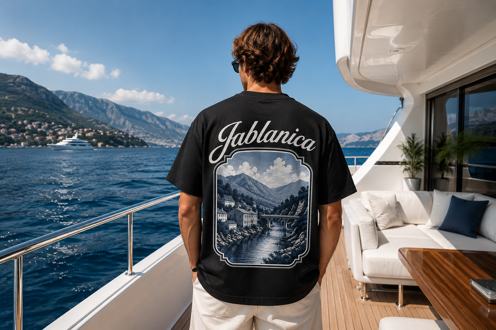

Ett pågående t-shirtvarumärke som jag bygger från grunden, just nu i fasen för varumärkesidentitet och positionering, inför lansering.
Stari Society är ett t-shirtvarumärke som jag bygger just nu, med fokus på att få varumärkesgrunden rätt innan produktion skalas upp eller lansering sker publikt. Eftersom jag redan grundat och sålt ett e-handelsvarumärke (Vilaventia) ville jag den här gången tillämpa det jag lärt mig om förtroende och positionering redan från start istället för att lista ut det längs vägen.
Projektet är just nu under aktiv utveckling: identitet, positionering och tidig designriktning är definierade, medan produktsortimentet och lanseringen fortfarande finslipas.
Så här långt är det jag som ansvarat för hela varumärkesarbetet.
Ett tidigt urval, moodboard och logotypsutforskning.








Varumärket är fortfarande under utveckling och nästa steg innefattar att finslipa produktsortimentet, ta fram de första provdesignerna och förbereda för en publik lansering. Jag uppdaterar den här sidan allt eftersom projektet utvecklas.